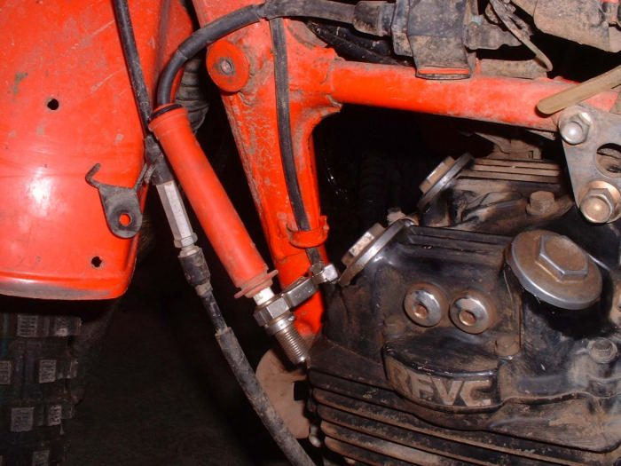

Home mechanic (basic tools) · Time: 10 to 15 min (estimate)
An engine needs a spark at the plug at the right moment. This test shows whether the ignition makes a spark at all, and roughly how strong it is. It splits a no-start fault into "ignition" or "something else" (fuel or compression).
Safety
- The ignition makes a very high voltage. Do not hold the plug lead or cap in your hand while cranking. Use insulated pliers and a proper spark tester.
- Fuel vapour can catch fire. Do the test away from spilt fuel, with the tank cap closed. Do not test next to the open plug hole: fuel mist comes out of it when you crank.
- Never make a spark by touching the lead to the frame. This is unsafe and can damage the coil and the ECU or CDI.
- Fuel-injected bikes spray fuel into the open plug hole while cranking. Keep cranking short, and cover the plug hole with a clean rag. If your manual allows it, unplug the injector or fuel pump connector with the key OFF before the test, and clear any fault code afterwards.
You need
- An enclosed spark tester. An in-line tester fits between the cap and the plug; an adjustable gap tester clips to earth.
- If you have no tester: a known good spare plug held firmly against bare engine metal with insulated pliers, away from the plug hole.
Steps
- Key OFF. Pull the plug cap straight off.
- Blow dirt away from around the plug, then remove the plug. Look at it now: it is a clue. See Read a spark plug.
- Fit the spark tester to the plug cap and clip its earth lead to bare engine metal. (Or fit the cap to the spare plug and hold the plug body against bare metal with insulated pliers.)
- Key ON. Engine stop switch on RUN. Gearbox in neutral.
- Crank the engine for a few seconds with the starter or kickstarter while you watch the tester in shade.
- Read the result: - Strong, bright blue-white spark, every turn: ignition is probably fine. Check fuel and compression next. - Thin, orange or red spark, or one that misses: weak spark. Go to Weak, thin or orange spark. - No spark: go to No spark at the spark plug.
- Colour is only a rough guide. A spark that looks fine in open air can still fail under compression. A spark tester with an adjustable gap gives a fairer test.
- Fit the plug, tighten it correctly (Remove, check, gap and fit a spark plug), and push the cap on until it clicks.
Check your work
- The plug is tight and the cap clicks on.
- Any connector you unplugged is back in and the key is OFF.
If it did not fix the problem
- Good spark but no start: Engine turns over but will not start (check fuel, flooding and compression).
- Spark fails only when the engine is hot: test again straight after it cuts out. See Ignition cuts out when hot and returns when cool.